Роберт Харитонов, Одноклассники
Web Standards Days, Санкт-Петербург, 2013.
РИТ ++, Москва, 2013. Видео запись доклада.
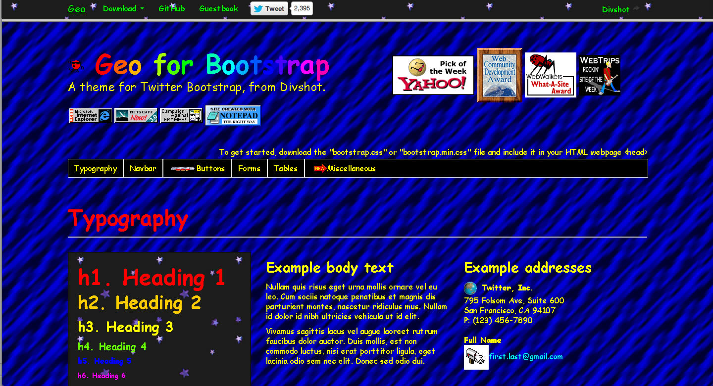
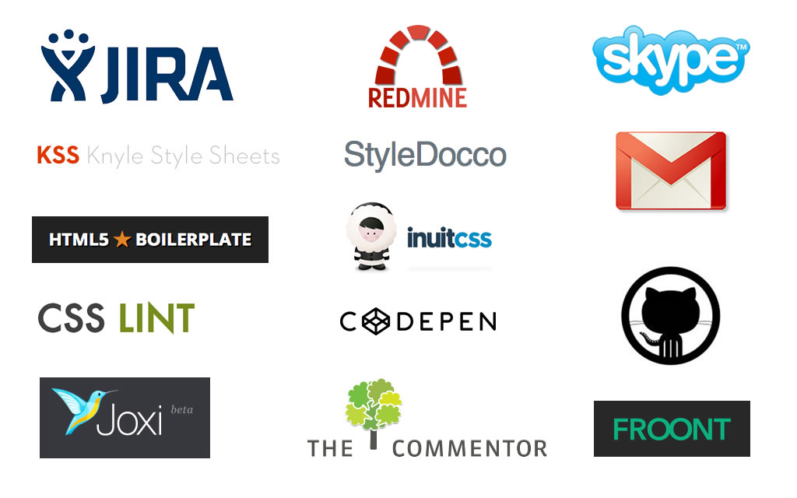
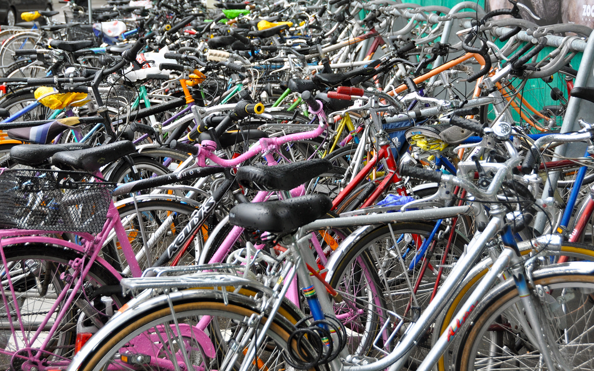
.cb { /* complex block */overflow: hidden; /* have floats inside */position: relative; /* have p:abs inside */width: 100%;/* .cb-head height + .cf-footer / 20 + 17 */min-height: 37px;}
.cb { /* complex block */overflow: hidden; /* have floats inside */position: relative; /* have p:abs inside */width: 100%;/* .cb-head height + .cf-footer / 20 + 17 */min-height: 37px;}
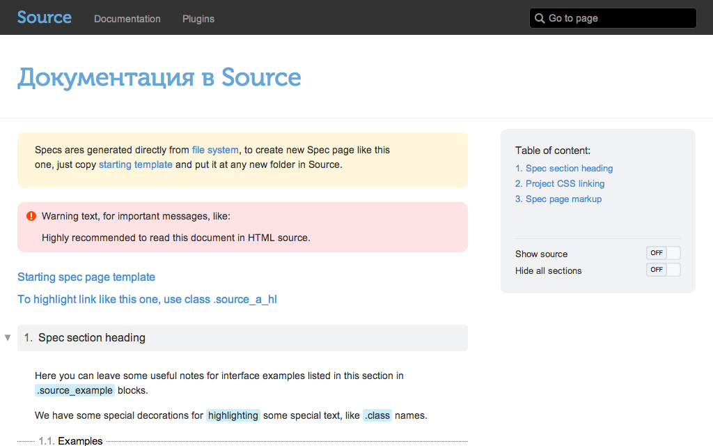
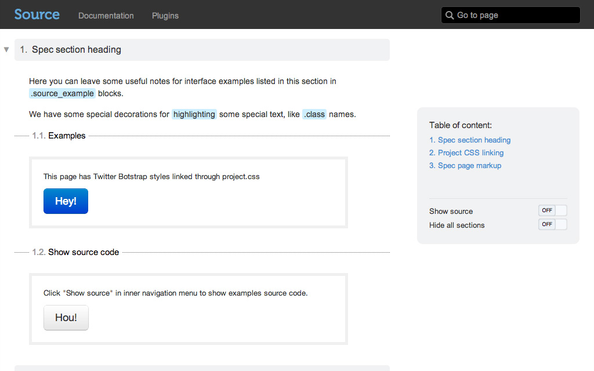
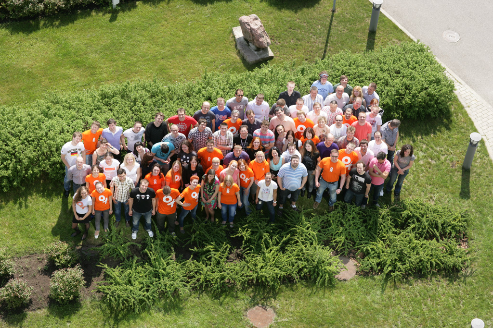
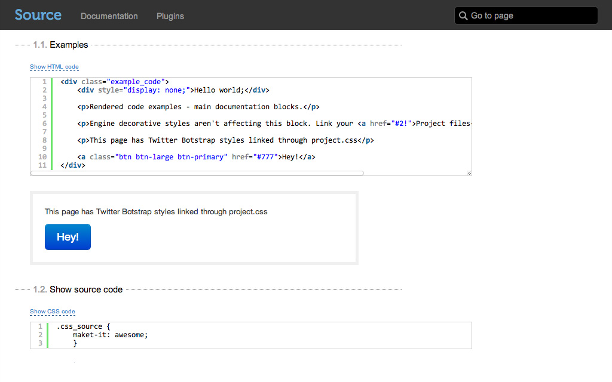
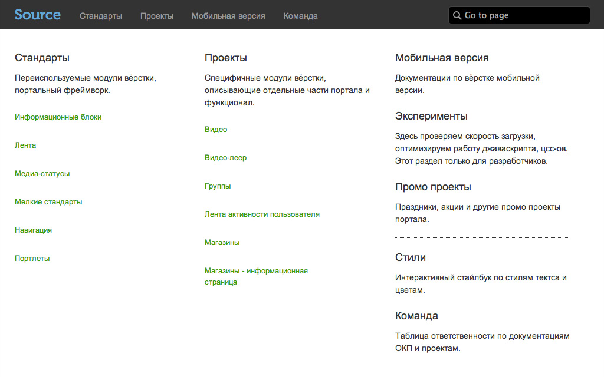
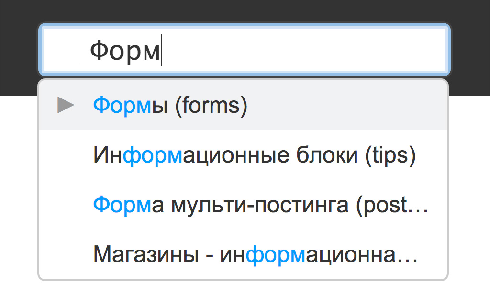
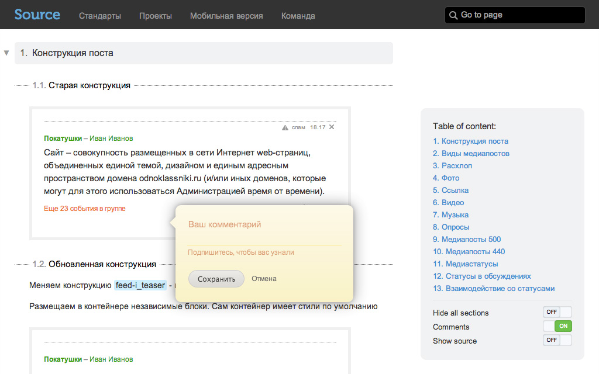
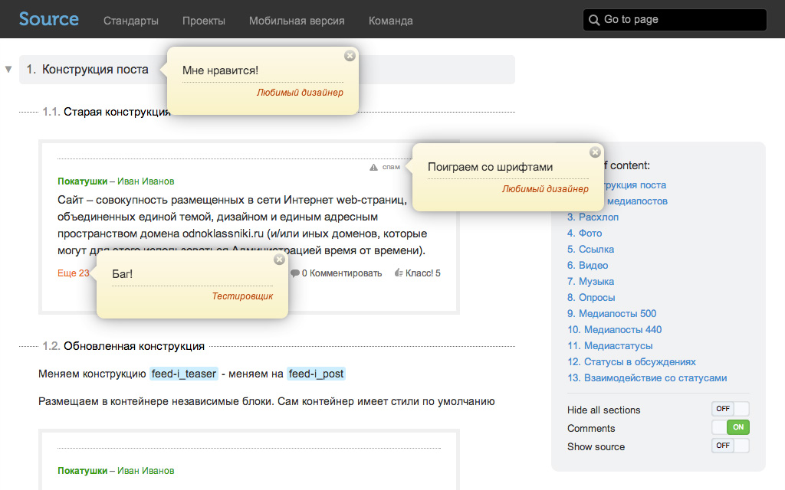
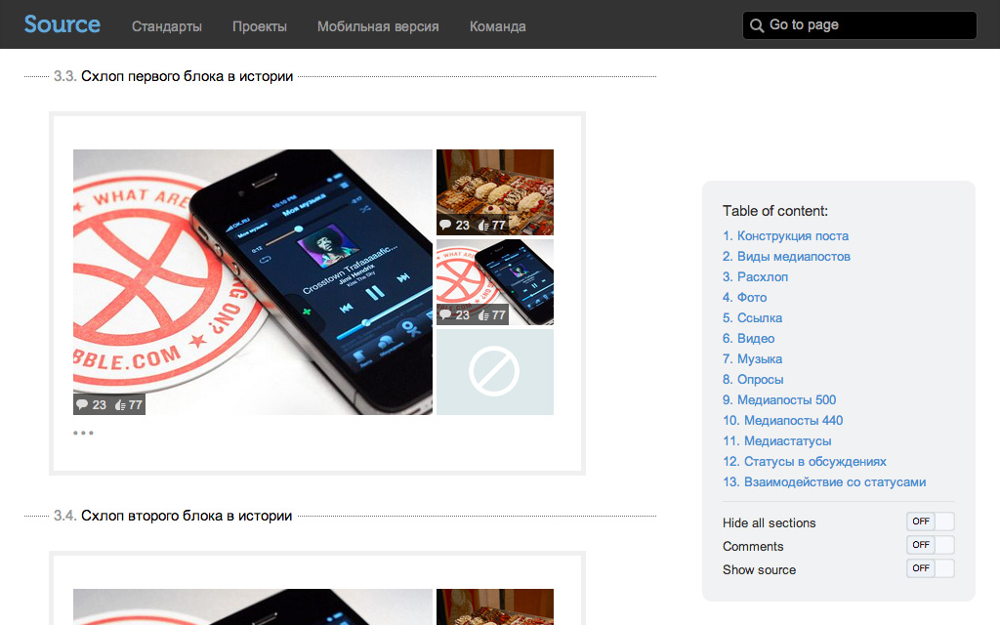
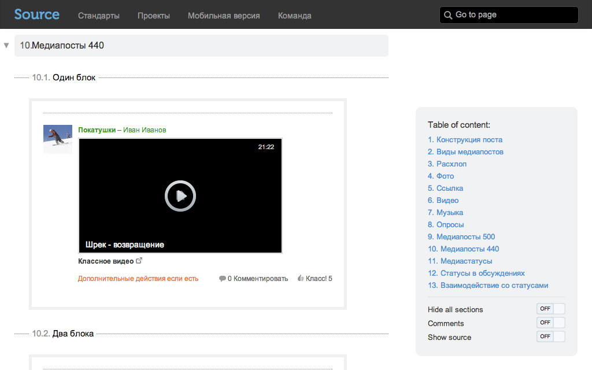
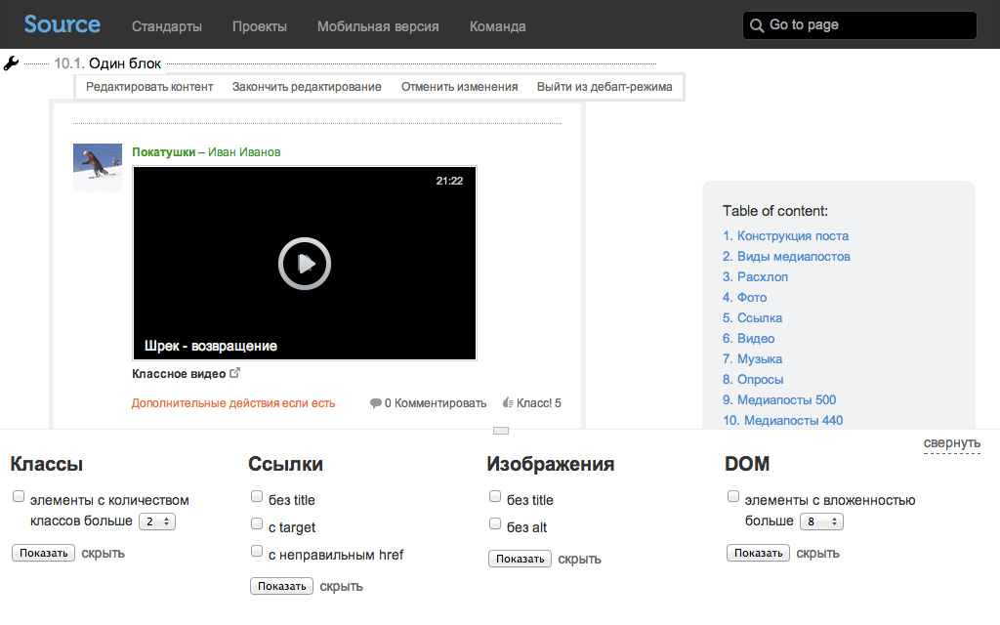
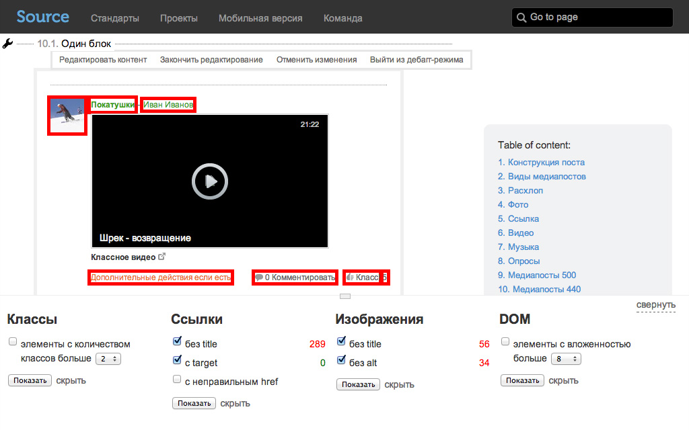
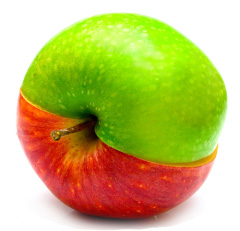
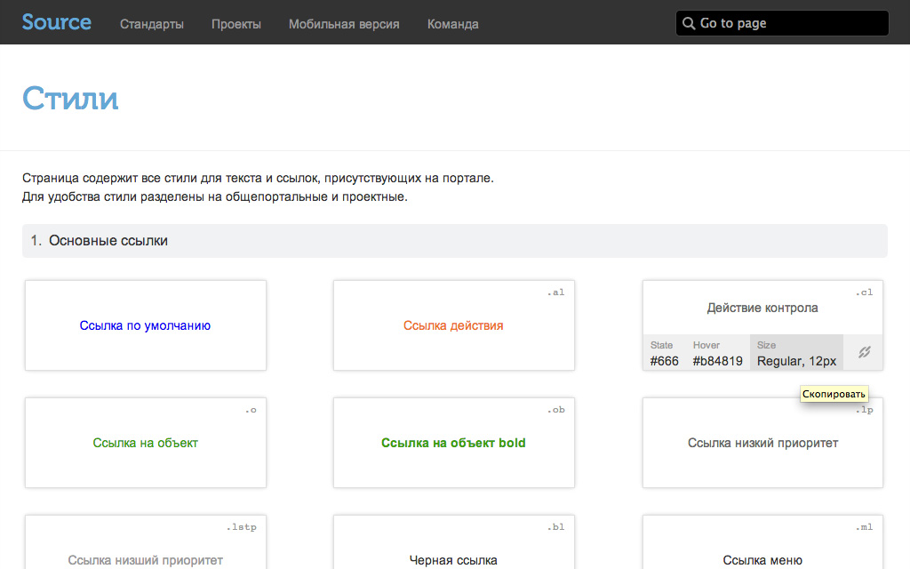